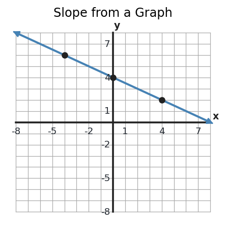
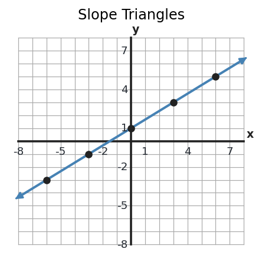
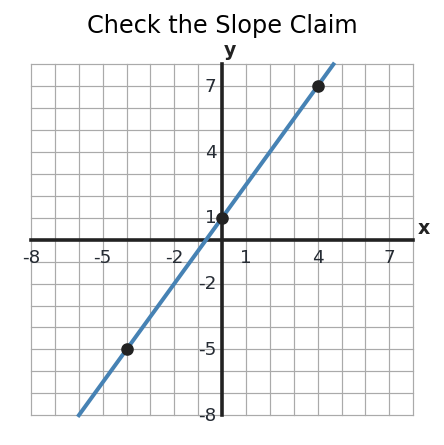
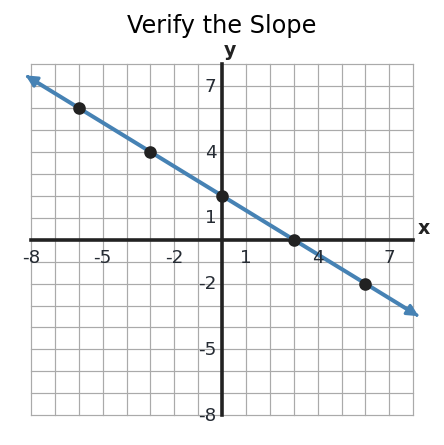

1. Before calculating, is the slope positive or negative, and is \(|m|\) less than 1, equal to 1, or greater than 1? Then find the exact slope.

1. Before calculating, is the slope positive or negative, and is \(|m|\) less than 1, equal to 1, or greater than 1? Then find the exact slope.

2. Choose any two rows that make the slope easy to compute, then find the slope.
| \(x\) | \(y\) |
|---|---|
| -2 | 11 |
| 1 | 5 |
| 4 | -1 |
| 7 | -7 |
3. Rewrite \(3x+2y=12\) in \(y=mx+b\) form. Then state the slope.
4. Evaluate \(2a-3b\) when \(a=-4\) and \(b=5\). Write the substituted expression first.
5. What should you do first in \(24-2(7-3)^2\)? Name the first operation, then evaluate.
6. Complete the equivalent rewrite and then evaluate: \(-9-(-14)=-9\;\square\;14\).
7. On this line, Student A uses rise/run \(2/3\). Student B uses \(4/6\). Are both slope triangles valid for the same line? Explain.

8. The table has slope \(-2\). Find the missing \(y\)-value.
| \(x\) | \(y\) |
|---|---|
| -1 | 8 |
| 2 | 2 |
| 5 | ? |
9. Compare \(y=4x-7\) and \(2y=8x+6\). Do the equations have the same slope? Show how you know.
10. A student changes \(5x-2\) into \(5(-6)-2\). What value was substituted for \(x\)? Explain how you know.
11. A student says the slope is \(\frac{2}{3}\) because the run is 2 and the rise is 3. Critique the claim and give the correct slope.

12. Compare Table A and Table B. Do they have the same slope? Explain.
| Table A | |
|---|---|
| \(x\) | \(y\) |
| 0 | 1 |
| 2 | 7 |
| 5 | 16 |
| Table B | |
|---|---|
| \(x\) | \(y\) |
| 1 | -4 |
| 3 | 2 |
| 6 | 11 |
13. A student claims the line has slope \(-\frac{2}{3}\). Verify or reject the claim using two points from the graph.

14. A student uses the table and writes \(m=\frac{3}{-6}=-\frac12\). Explain the error and find the correct slope.
| \(x\) | \(y\) |
|---|---|
| -2 | 9 |
| 1 | 3 |
| 4 | -3 |
15. For \(4x-2y=10\), a student says the slope is \(-2\). Identify the sign error, rewrite the equation, and state the correct slope.
16. For \(4x+x^2\) when \(x=-3\), a student writes \(4(-3)+x^2\). Explain the substitution error, correct the setup, and evaluate.
17. A student evaluates \(3(2+2)^2\) as \(12^2=144\). Explain the first error and give the correct value.
18. Before calculating, predict whether \((-7)(-3)+(-8)\) is positive or negative. Then evaluate it.